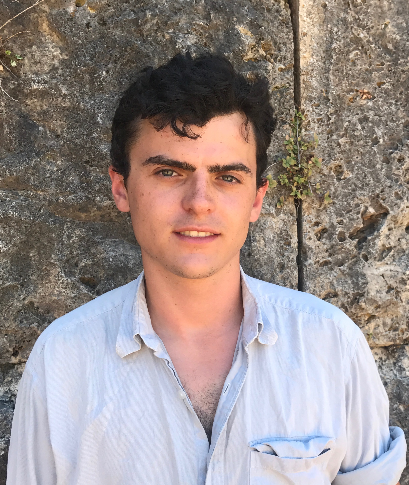

I'm a Postdoctoral Research Associate at Universidade Estadual de Campinas, under the BRIDGES collaboration. I am also associated to the GeometrIA Lab (AI for Geometry) at the Centro Brasileiro de Geometria. My research interests include, but are not limited to: geometric analysis, gauge theory, and Riemannian manifolds with special geometric structures. More recently, I have been working on numerically modelling these structures. My past collaborators include Matt Turner (Bath), Henrique Sa Earp (Unicamp), Jason Lotay (Oxford), Ed Hirst (Unicamp), Tomas S.R. Silva (Unicamp), Tancredi Schettini Gherardini (Bonn). I finished my doctorate at University College London in 2022, studying gauge theory with symmetries under the supervision of Lorenzo Foscolo.
| Published | Title | Text |
|---|---|---|
| Learning almost complex and complex structures (joint with Edward Hirst, Tancredi Schettini Gherardini and Tomagis S. R. Silva). | arXiv | |
| 2026 | Isolated singularities in G2-structures with torsion (joint with Henrique Sa Earp). | arXiv, Journal |
| 2026 | Nearly G2-manifolds and G2-Laplacian co-flows (joint with Jason Lotay). | arXiv, Journal |
| 2025 | G2-instantons on the ALC members of the B7 family (joint with Matt Turner). | arXiv, Journal |
| 2024 | G2-instantons on the spinor bundle of the 3-sphere (joint with Matt Turner). | arXiv, Journal |
| 2023 | SU(2)^2-invariant gauge theory on asymptotically conical Calabi-Yau 3-folds | arXiv, Journal |
| Date | Title | Event | Material |
|---|---|---|---|
| Jun 2026 | Instabilities of G2 Laplacian co-flows | Special Geometries Workshop (ICTP Trieste) | Website |
| Jul 2025 | Mathematical Congress of the Americas | Website | |
| Mar 2024 | Special Holonomy and Geometric Structures on Complex Manifolds (IMPA) | Video | |
| Jun 2023 | Workshop BRIDGES: Special geometries and gauge theories | Website | |
| Jun 2023 | Yorkshire and Durham Geometry Day | Website | |
| Nov 2022 | New G2-instantons on non-compact G2-manifolds with symmetries | University Libre de Brussels Geometry Seminar | Website |
| Nov 2022 | New families of G2-instantons | Oxford-London Gauge Assembly | OLGA2022 |
| Oct 2022 | Instantons on Riemannian metrics with holonomy G2 and SU(3) | Universite de Bretagne Occidentale |
| Date | Title | Link |
|---|---|---|
| 2024 - 2026 | GeoTop seminar (Unicamp) | CBG |
| 3-7 July 2023 | British Isles Graduate Workshop IV | BIGWIV |
| June 2021 | Early-Career Researchers in Mathematics | ECRM2022 |
| 24-25 June 2021 | Oxford-London Gauge Assembly | OLGA2021 |
| Title | Description | Link |
|---|---|---|
| Corrigan-Fairlee 't Hooft Ansatz | A note explaining the construction of instantons on special holonomy cones via a Hessian equation. | Notes |
| Chalkdust Magazine | A mathematics magazine I used to help edit and write | Article |
| ALE, ALF, and Abelian Instantons | Introductory notes on the Eguchi-Hanson and the Taub-Nut metrics | Notes |
| Hamiltonian Actions, Moment Maps, and Convexity | Introductory notes for a short reading project. | Notes |
| Introduction to Gauge Theory and Invariants | Slides for a graduate geometry seminar talk | Notes |
| Gray Manifolds | Talk notes for the British Isles Graduate Workshop III, typed up by Holly Mandel | Notes |
| The Calabi Ansatz | Introductory notes on the Calabi ansatz for Ricci-flat Kahler metrics | Notes |
| Introduction to Calibrated Geometry | Slides for a graduate geometry seminar talk | Notes |
| Gauge Theory Reading Seminar | Nahm's Equations and HyperKahler Quotient Constructions | Website | Gauge Theory Reading Seminar | Yang-Mills Instantons on Gravitational Instantons | Website |